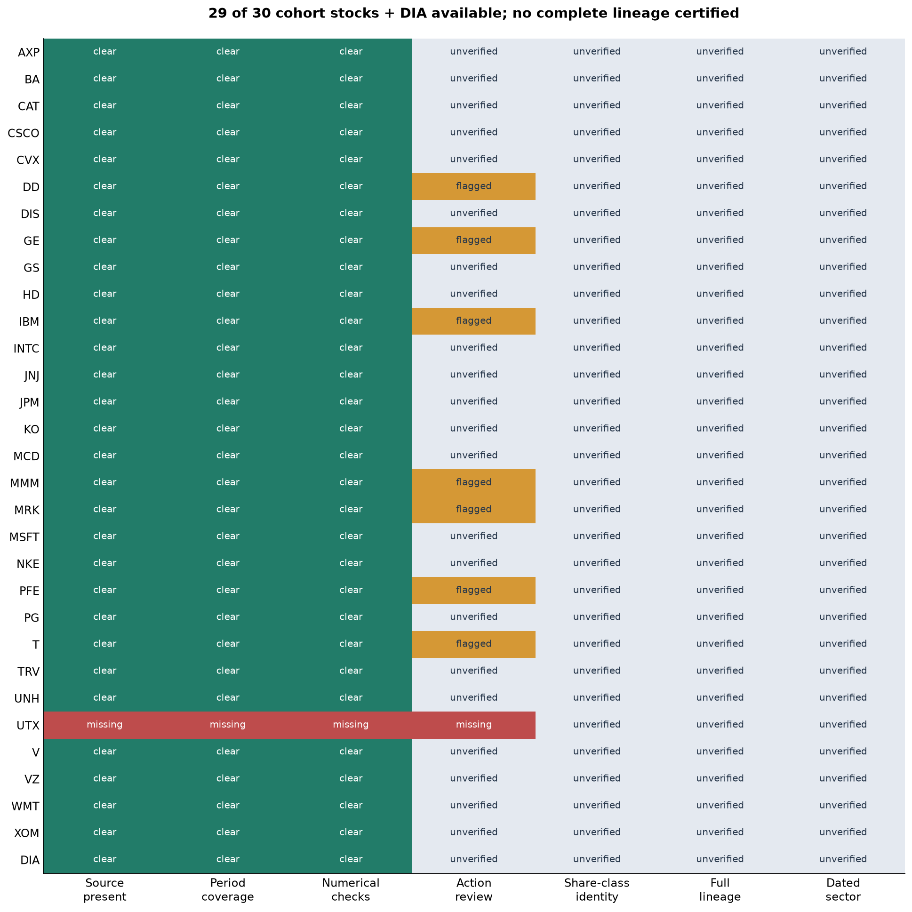
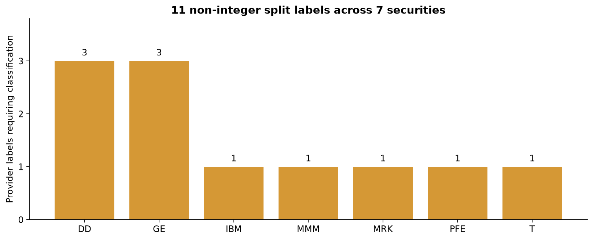
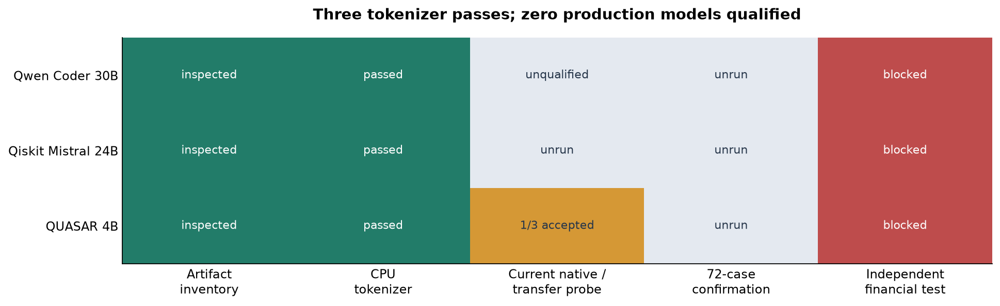
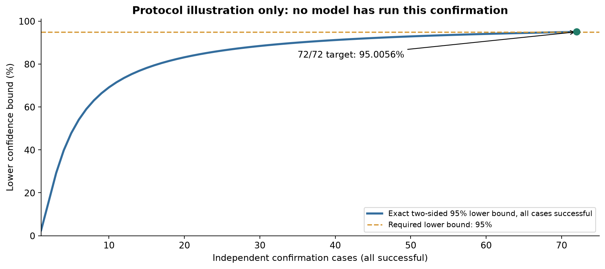
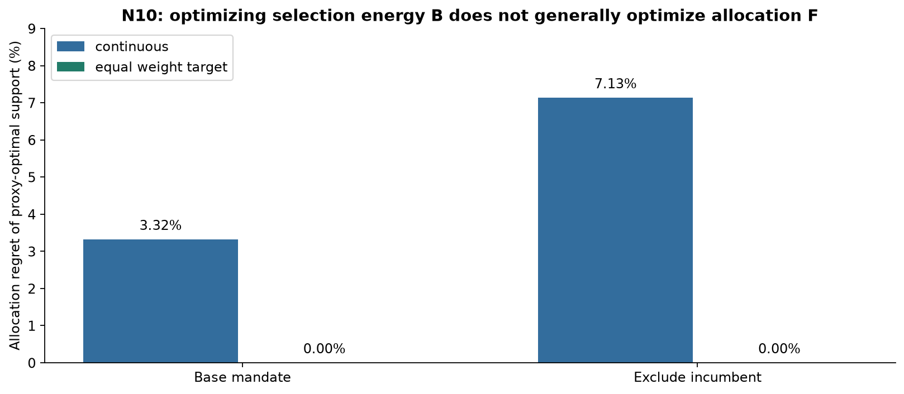
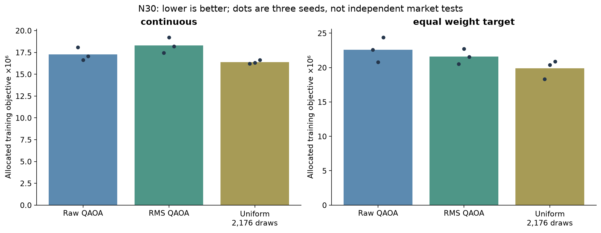
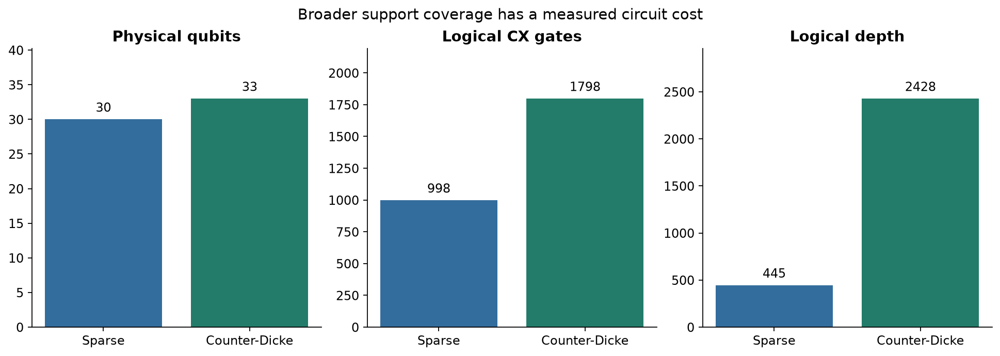
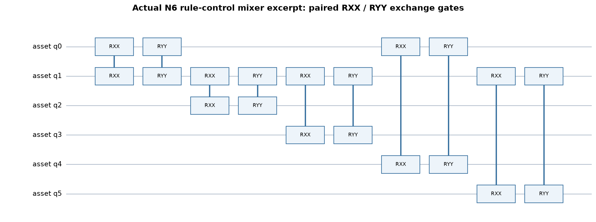

AGQO / research evidence / 2026-11-04
What works, what is measured,
what still blocks the claim.
A visual audit of historical data, circuit design and model readiness. Every measured figure comes from saved artifacts. Reliability targets are labeled as planning illustrations.
Financial evaluation remains blocked. No production LLM, investment outperformance or quantum advantage is qualified.
Data
Historical data: numerical hygiene versus investability

Source/coverage/numerical columns are diagnostics only. Action labels flagged for review are not necessarily bad prices. All share-class, complete lineage and dated-sector reviews remain unverified; UTX is missing. DIA is an ETF proxy, not the official index.
Data
Provider adjustment factors need economic interpretation

The vendor may encode a spin-off or other noncash adjustment as a split. For example, a 1.046 price factor is not 0.2 Kyndryl shares per IBM share. Primary event candidates remain a partial ledger; dividends and all other actions also need source reconciliation.
Models
Model selection has separate gates

Artifact inspection and CPU chat rendering do not load model weights or test gate generation. QUASAR's completed interface probe accepted 1/3 tasks; older coder pilots are exploratory. The shortlist is provisional and no GPU sweep was added.
Models
Why a small successful pilot is insufficient

A planning illustration, not observed model performance. The locked 72-case confirmation needs 72 first-pass successes for this criterion. Independence must be justified; task seeds are not independent market or semantic cases. Do not extend the set until it passes.
Finance
Formulation mismatch survives a better circuit

Exhaustive opened-development support audit. The continuous objective has 3.32% / 7.13% regret at the proxy optimum. Equal-weight targets pass B=F identity but define a different financial mandate. These are training-objective diagnostics, not realized returns.
Finance
The classical control remains stronger

Opened conditional US corpus, ideal simulation. RMS coordinates improve energy geometry but worsen the continuous allocated objective here. Uniform uses the maximum optimizer-plus-final draw allowance; quantum postprocessing used final samples only. This pooling difference is explicit and no runtime or significance win is claimed.
Quantum
Coverage alone does not establish utility

Counter-Dicke reaches all 593,775 N30/K6 supports, using 33 physical qubits, 1,798 CX and depth 2,428. Workspace and cost compilation are counted. Counts assume all-to-all logical connectivity. No physical-device execution or full N33 Qiskit statevector validation is claimed.
Quantum
What circuit design changes

Drawn from the saved verified rule-control GateIR, not an LLM-generated success. Only the first asset-register mixer is shown; preparation, immutable compiler-owned COST, slack and measurement are omitted. Each RXX/RYY pair shares its angle; a lone RXX does not preserve cardinality.